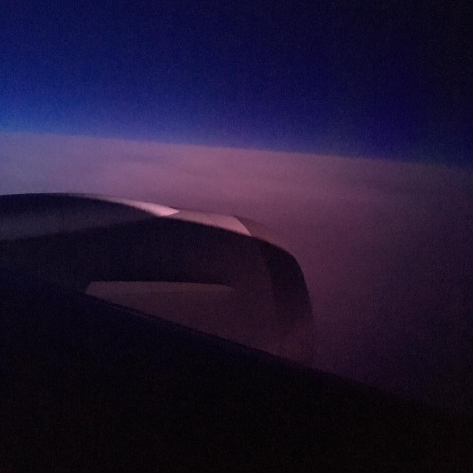

I'm spending my summer in Taiwan and on May 19 began my long day (or so I thought) of flights to Taiwan. The plan was to fly out of Omaha to Denver, then to Narita, Japan, then to Taiwan. I was to leave on a Thursday morning and arrive on a Friday night but due to the time difference only spend about 24 hours in airports and airplanes until my arrival. However, this did not go to plan!
My flight from Omaha to Denver went without a hitch and we actually arrived 30 minutes before the scheduled time. This was only the second time I'd seen mountains!
I walked around the Denver airport for a bit and sent postcards to both of my grandmas. Then I ate my last meal in America (chicken Panini sandwich with avocado) and got ready to board my plane. I had a window seat with tons of legroom (that I had to pay $168 for..being tall is expensive!) and my neighbor was really nice and talkative. They told us that the flight would be delayed 30 minutes so we just kept sitting on the plane. After 30 minutes was up they told us the plane had a hydraulic leak and they were checking to see if they had the part to fix it so the flight was delayed another 30 minutes. After 30 minutes, we all had to get off the plane and we were told the plane was delayed for 6 more hours!
I quickly went to the customer service desk and got a new connecting flight from Japan to Taiwan. The lady asked me if I fly internationally by myself a lot (I think she added the "by yourself" part because she thought I was a lot younger than 22) and when I said no, she told me I was unusually calm so that made me feel pretty flattered I guess.
When it finally came time to board the plane again, the same thing happened. Apparently there was a software error and we also needed new flight attendants. We sat in the plane for 2 hours. By the time we finally took off, the plane had been delayed 9 times total! I was also going to miss my connecting flight in Japan. They told us that when we arrived they would have things figured out for us because they had 10 hours to work on it.
The flight itself was pretty cool except for the fact I couldn't sleep at all. They also gave us free alcohol so I drank a few beers and yes it is true that alcohol effects you more on an airplane. We were going the same direction as the sun so the sun didn't really move much in the sky the whole time. We also flew in an arc and actually went over Alaska. I was able to see snowy mountains from my plane! About 8 hours into our flight the sun set, and I saw a sunset from over the clouds.
Finally we arrived in Japan. This was the first foreign country I'd ever been to but I was in such a hurry to beat the crowd for getting my arrangements figured out that I didn't really have time to enjoy it. Everyone helping us was Japanese and weren't fluent in English and really thick accents (which I don't fault them for at all), but the lady helping me was so nice. I was given a bus pass and a free hotel room for the night. Then in the morning I was to catch a bus to Tokyo for my connecting flight. After getting our accommodations figured out, we had to go through immigration and also customs so at least I got my passport stamped for Japan!
The hotel room was super cool. It was tiny and the toilet had a heated seat and bidet. I got some Japanese money from a machine and visited the convenience store. I bought some sort of ice cream thing, sushi, and a giant beer for only about $10 USD. The television in my hotel room had tons of channels of the same slideshow of flowers with either Japanese talking or Japanese music (I still don't know what that was about).
Then I got a phone call that I was supposed to pick up my checked bags at the airport (should've been obvious to me but I didn't even think about it!) and had to go back. The hotel called the shuttle for me and when I arrived at the airport a ton of people were trying to help me get to where I needed to go to pick up my bags. Everyone was so nice about it. I was really stressed but everything ended up being fine.
Due to jet lag I couldn't sleep all night except in short 1 hour bursts!
In the morning I caught my shuttle to the airport and my bus to Tokyo. I boarded the plane for Taiwan with no problems and was partially glad my earlier flight got delayed 9 times so that I could experience 12 hours in Japan, even if I didn't venture out of my hotel room and the airports! Everyone I came across in Japan was super nice, kind, and helpful and the scenery was beautiful. (The header photo for this post is the view from my hotel room in the morning.) The only American thing I missed while in Japan was the simple toilets! (The women's airport bathroom also had a urinal in it so I left really fast in case I was somehow in the men's restroom.)
More posts to come about being in Taiwan!
Questions? Comments? Don't hesitate to contact me!